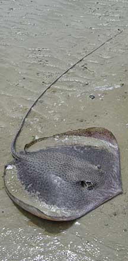
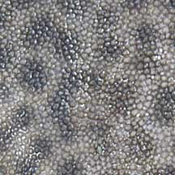
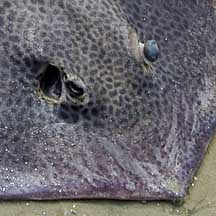
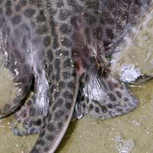
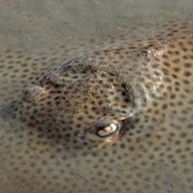
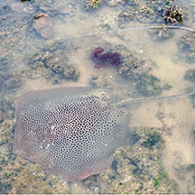

|
|
| fishes text index | photo index |
| Phylum Chordata > Subphylum Vertebrate > fishes > Order Rajiformes > Family Dasyatidae |
| Honeycomb
whipray Himantura uarnak Family Dasyatidae updated Sep 2020 Where seen? This humungous spotted stingray is sometimes seen at Chek Jawa. Elsewhere it is common on sandy beaches and in shallow estuaries and lagoons; also found in sandy areas of coral reefs. Features: A large ray that can grow to about 160cm in diameter and 6m in total length. It has conspicuous dark spots on a light brown disc; spots well-spaced in young but crowded to form reticulated or honey-comb like pattern in adult; white ventrally; tail marked with bands of black and white; snout sharply pointed; disc with narrowly rounded outer corners, and tail long, slender and nearly three times body length when intact. |
|
 Tail very long and slender. A large dead one seen on the sand bar. Chek Jawa, May 03 |
 Granular skin on adult. |
|
 Broadly triangular snout. |
 |
| What does it eat? Small fishes, clams, crabs, shrimps, worms and jellyfishes Human uses: It is commonly caught although not esteemed as a food fish. Status and threats: It is listed as Vulnerable on the IUCN Red List due to its slow rate of reproduction, overfishing, and loss of its preferred shallow water inshore habitats. |
| Honeycomb whiprays on Singapore shores |
On wildsingapore
flickr
|
| Other sightings on Singapore shores |
 |
||
 Pulau Sekudu, May 25 |
Links
References
|